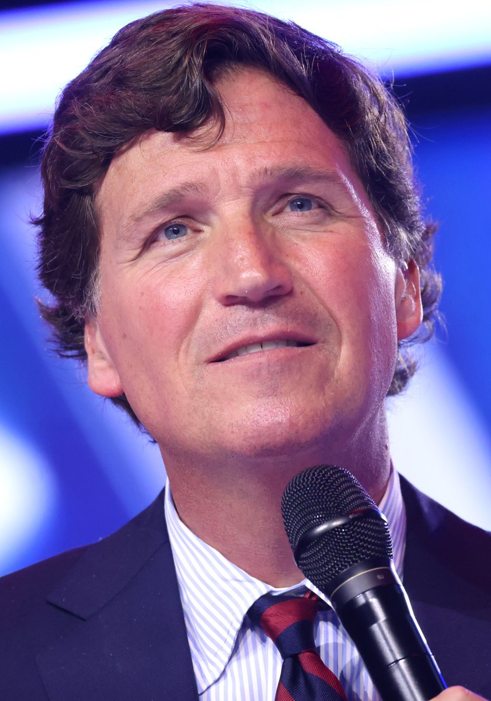

Why Carlson matters
A critic who was once on the other side of the argument

Carlson is not a historical opponent of Trump. He supported him, argued for his return to the presidency and had private conversations with him.
In NPR's September 24, 2026 interview, Carlson said Trump should have been removed under the 25th Amendment after what Carlson interpreted as a threat of offensive nuclear use. He also recounted a private conversation in which, according to Carlson, Trump answered warnings about war with an idea equivalent to everyone dying eventually.
That conversation is not publicly recorded. It should be treated as Carlson's testimony, not as an independently verified quotation. Its significance lies in who is making the claim, his prior proximity to Trump and the political break it represents.
Portrait: Gage Skidmore, CC BY-SA 2.0, via Wikimedia Commons. Image source ↗
The philosophical point
The issue is not only policy: it is what kind of character makes power safe
A presidency concentrates military, diplomatic and executive authority capable of affecting millions of people. Character is therefore not ornamental. Humility, self-restraint, acceptance of limits, responsibility for consequences and respect for institutions capable of saying “no” to the president are relevant conditions in any democracy.
Carlson interprets the alleged comment about death as nihilism. That is his interpretation, not a medical or psychological diagnosis. But it raises a legitimate question: what happens when someone holding extraordinary power appears to discount consequences for people who will live after him?
Convergence
It is not one voice
John Kelly, the retired Marine general and former Trump chief of staff, said Trump preferred a dictatorial approach and questioned his understanding of constitutional limits. Trump rejected those claims.
James Mattis, Trump's former defense secretary, accused him of deliberately dividing Americans and warned against politicizing the military. Mark Esper, who also led the Pentagon, has issued warnings about Trump and democracy.
Mike Pence, Trump's vice president for four years, broke with him after the efforts to overturn the 2020 election result and later said Trump had placed himself above the Constitution. John Bolton, a former national security adviser, has also described Trump as unfit for office.
These people do not form a single ideological bloc, and their accounts do not by themselves prove a total conclusion about Trump. What matters is the recurrence of concerns about limits, personal loyalty, impulsiveness and the use of power among people who worked directly with him.
An outside perspective
Jeffrey Sachs reaches the problem by a different route
Jeffrey Sachs was not a Trump official or part of MAGA. His contribution is different: he criticizes U.S. foreign policy through the lenses of international law, diplomacy and escalation risk.
During 2026 he repeatedly warned about the regional and global consequences of the war with Iran. That does not confirm the private accounts of Carlson, Kelly or Pence, but it adds a second layer: people outside Trump's circle are also warning about the costs of highly personalized military decision-making.
What is public
The case does not depend entirely on private testimony
On September 22, 2026, at the United Nations General Assembly, Trump publicly warned that Iran could be “annihilated” if a peace agreement was not reached. Reuters documented that statement.
The analysis therefore need not rely exclusively on other people's memories. Testimony can be compared with public language, concrete decisions and the way the president responds to institutions, adversaries and officials who contradict him.